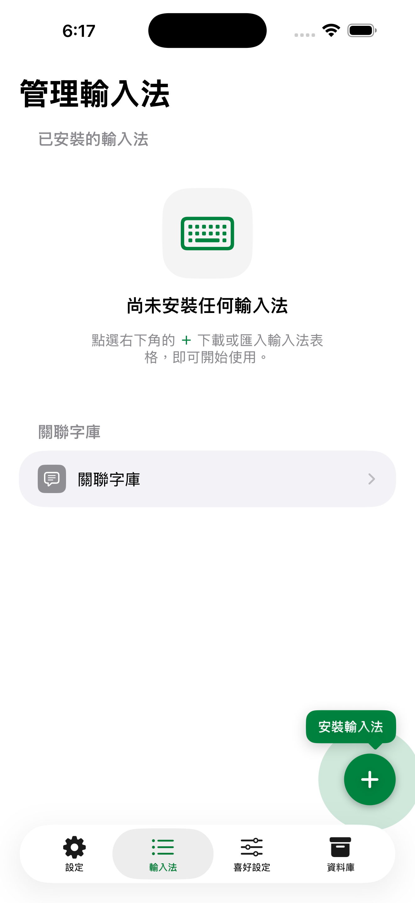
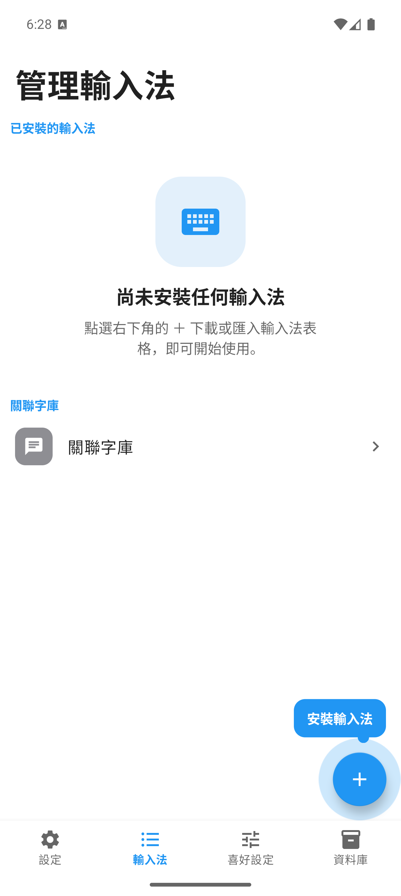

快速上手
在 iPhone/iPad 啟用萊姆輸入法
打開萊姆輸入法 App，第一個「設定」分頁會顯示鍵盤啟用、目前鍵盤與輸入法安裝狀態。依序完成即可。
- 點按「前往設定」在「設定」分頁底部點按綠色的「前往設定」按鈕，系統會開啟萊姆輸入法的設定頁。
- 進入「鍵盤」點選「鍵盤」，再開啟「萊姆輸入法」的開關。
- 選擇是否開啟「允許完整取用」這是選用功能解鎖，用於備份資料庫、按鍵震動回饋與編輯字根資料表。不開啟仍可正常打字、安裝或匯入輸入法，也可還原資料庫。
- 切換到萊姆輸入法回到 App 後，若畫面顯示尚未切換，點按「選用萊姆輸入法」，再長按或點按地球鍵選擇萊姆輸入法。
- 安裝或啟用輸入法確認「輸入法」狀態不是紅色或橙色。尚未安裝時，請從「輸入法」分頁下載或匯入至少一套輸入法。
iPhone / iPad設定分頁 · 已啟用

iOS「設定」分頁，綠色橫幅代表對應狀態已完成。橫幅顏色會自動更新：綠色＝已完成，橙色＝鍵盤已啟用但尚未允許完整取用，紅色＝尚未啟用。
i
看狀態橫幅就知道進度「設定」分頁上方的橫幅會自動更新。橙色代表鍵盤已啟用但尚未允許完整取用，仍可打字，但備份資料庫、按鍵震動回饋與編輯字根資料表會先維持未啟用。紅色代表尚未啟用萊姆輸入法鍵盤。
在 Android 啟用萊姆輸入法
打開萊姆輸入法 App，「設定」分頁會依目前狀態顯示對應按鈕，照著畫面指示操作即可。
- 點按「下一步」畫面顯示「啟動萊姆輸入法」時，點按「下一步」前往系統的鍵盤輸入法頁面。
- 在系統頁面啟用萊姆輸入法開啟「萊姆輸入法」，完成後按返回鍵回到萊姆輸入法 App。
- 選用萊姆輸入法回到 App 後點按「選用萊姆輸入法」，在系統的輸入法選擇頁選擇萊姆輸入法。
Android設定分頁

Android「設定」分頁。完成「選用萊姆輸入法」後，橫幅轉為綠色「鍵盤已啟用且為目前輸入法」。橫幅會依目前狀態自動更新——綠色＝已啟用且為目前輸入法，橙色＝已啟用但尚未切換，紅色＝尚未啟用。
i
「設定」分頁也會提醒你安裝輸入法啟用鍵盤後，「設定」分頁會多出一條輸入法狀態橫幅：尚未安裝任何輸入法時顯示紅色「尚未安裝任何輸入法」與「安裝輸入法」按鈕，點按即可直接跳到「輸入法」分頁。已安裝但全部停用時顯示橙色提醒；至少有一套已啟用時顯示綠色「已安裝 N 個輸入法」。
下載第一套輸入法
啟用鍵盤後，還需要至少一套輸入法才能打字。切換到「輸入法」分頁——尚未安裝時會看到鍵盤圖示的空白頁與「尚未安裝任何輸入法」說明，右下角的「＋」會以脈衝動畫與「安裝輸入法」小標提示你從這裡開始。點按「＋」進入下載與匯入畫面。
- 開啟「輸入法」分頁點按底部的「輸入法」分頁，再點右下角發亮的「＋」（也可從「設定」分頁的「安裝輸入法」按鈕直接進入）。
- 展開想要的輸入法例如點開「注音」，內建輸入法會列出雲端字根下載與本機匯入的選項。
- 從雲端下載或匯入檔案點選要下載的雲端字根（例如「OpenVanilla 注音字根」），或選「匯入 .cin／.lime」「匯入 .limedb」匯入自有碼表。
- 回到清單啟用下載完成後，輸入法會出現在清單中，開啟開關即可在鍵盤上使用。
iPhone / iPad輸入法分頁 · 尚未安裝

尚未安裝任何輸入法時的空白頁，右下角的「＋」會以動畫提示。
Android輸入法分頁 · 尚未安裝

Android 同樣會以空白頁與發亮的「＋」引導你安裝第一套輸入法。
i
支援的輸入法注音、倉頡（含五代與香港字）、速成、快倉、大易、行列與行列 10、拼音、華象直覺、輕鬆、筆順五碼，以及自建輸入法。完整清單見「管理輸入法」。
從舊裝置換機還原
如果你之前在其他裝置用過萊姆輸入法，可以把舊機的資料庫備份還原到新機，碼表、學習記錄與設定都會一起搬過來。
- 在舊機備份於舊裝置打開「資料庫」分頁，點按「備份資料庫」，把產生的
.zip檔存到檔案或雲端。在 iPhone/iPad 上，備份前請先開啟「允許完整取用」，並把目前鍵盤切換為萊姆輸入法。 - 在新機還原於新裝置打開「資料庫」分頁，點按「還原資料庫」，選擇剛才的備份檔。還原資料庫可以先執行，不需要先開啟完整取用。
- 確認還原完成畫面顯示還原完成後，輸入法清單與學習記錄即與舊機一致。
!
還原會覆蓋現有資料還原後，新機目前的所有萊姆輸入法資料將被備份檔取代，無法復原。換機時請在尚未輸入大量內容前先完成還原。詳細步驟與注意事項見「備份與還原」。